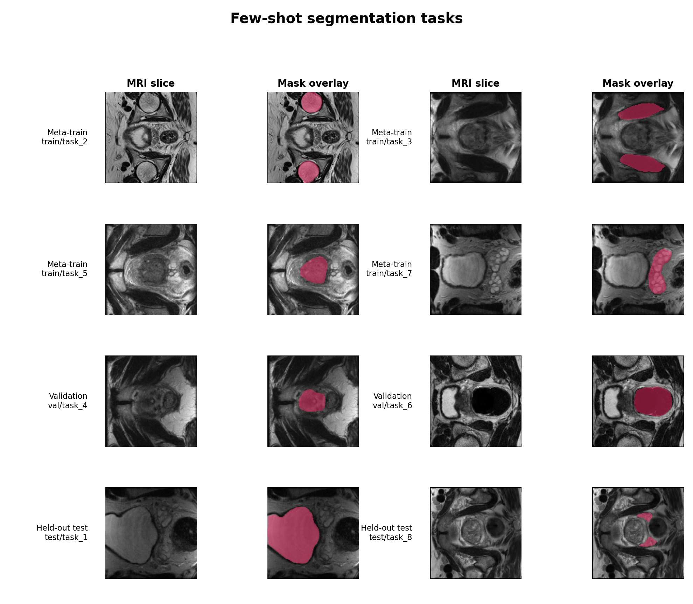
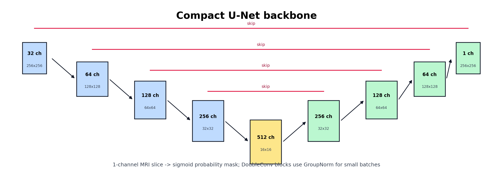
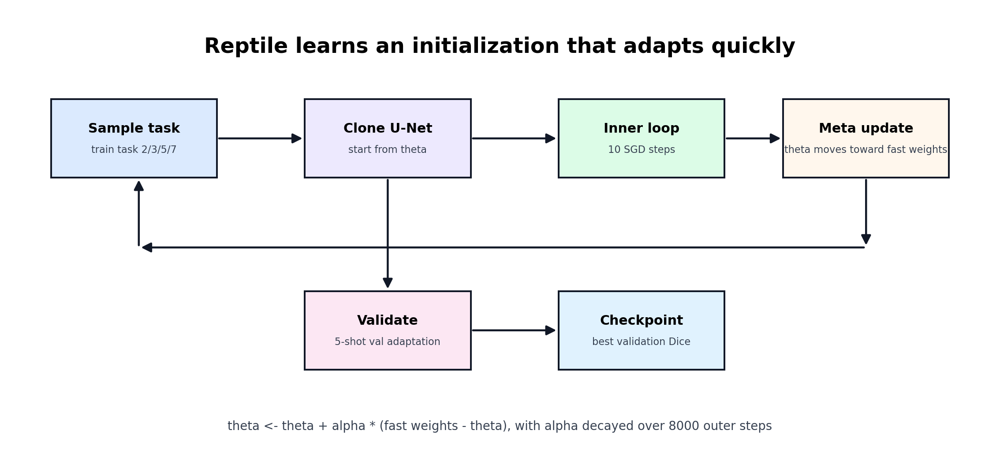
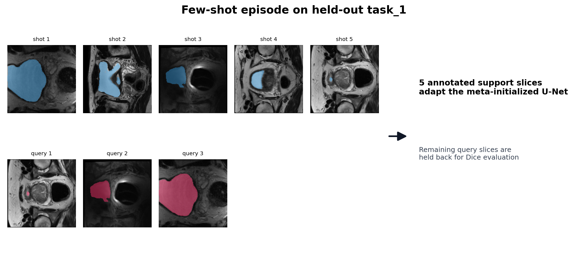
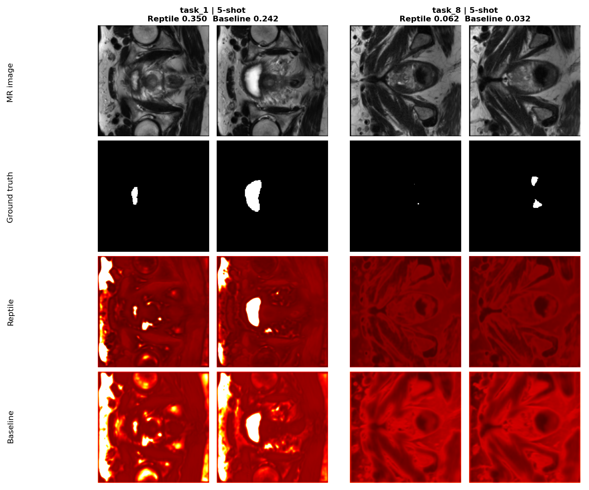
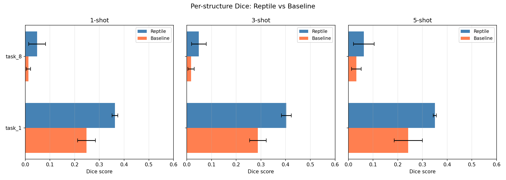
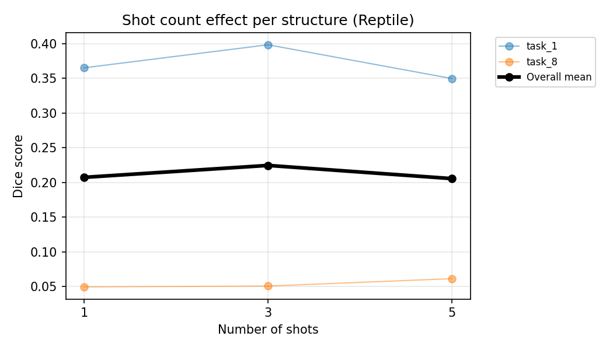
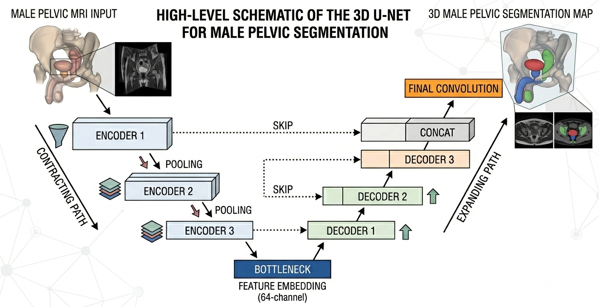
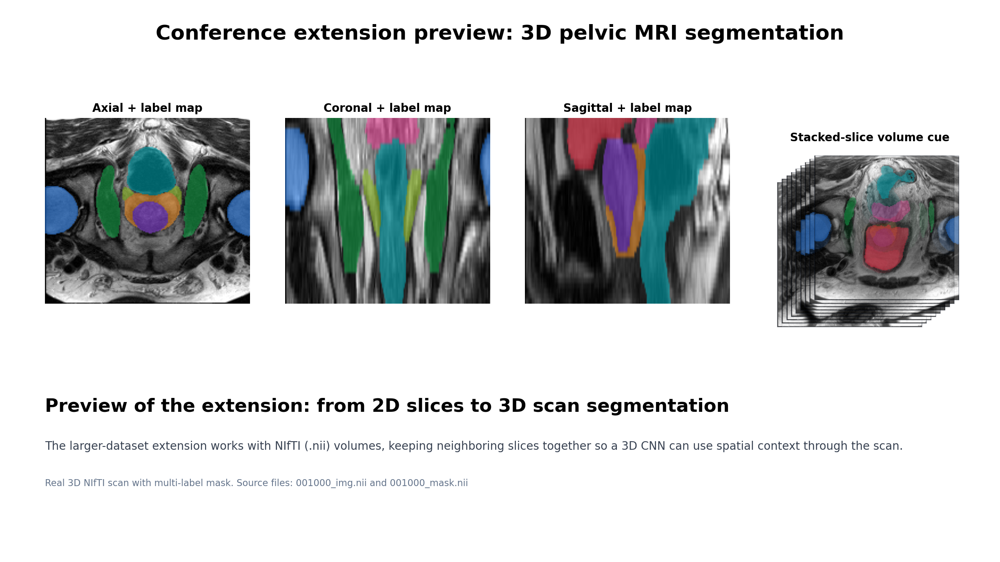

EMS741 Group 8
Few-shot abdominal MRI segmentation with Reptile meta-learning
The visual story: learn from several labelled anatomical tasks, adapt from only 1, 3, or 5 labelled slices, and segment unseen structures on held-out MRI slices.
Data
Each organ is treated as a separate task
The model sees meta-training structures, tunes hyperparameters on validation structures, and is finally judged on held-out test structures. The masks are binary foreground regions over grayscale MRI slices.


Backbone
A compact U-Net predicts the segmentation mask
The same encoder-decoder model is used for both Reptile and the baseline. The important difference is where the weights start: meta-learned initialization versus random initialization.
Meta-Learning
Reptile optimizes for rapid adaptation

Few-Shot Episode
Support slices teach the model the new structure
For a held-out task, a few labelled support slices are used for adaptation. The remaining query slices stay unseen until evaluation, which keeps the comparison fair.

Qualitative Results
Predictions after 5-shot adaptation

The top rows show the MRI image and ground truth; the lower rows compare Reptile and the from-scratch baseline on held-out task_1 and task_8.
Quantitative Results
Reptile is consistently ahead of the baseline


Where This Went Next
Conference-paper extension on the larger 3D dataset
The original project demonstrated 2D few-shot segmentation. The follow-on group work extends the same medical segmentation direction to full pelvic MRI volumes, using a 3D CNN/U-Net style architecture on the larger source dataset.

Use this as a brief preview only: it shows the later research direction, not the original few-shot evaluation pipeline.
3D Scan Preview
NIfTI volumes keep neighboring slices together

Recording Close
What to emphasize in the final video
New anatomical labels are expensive, so we need adaptation from very few examples.
U-Net handles the pixel-wise segmentation output.
Meta-training learns weights that can move quickly toward a new task.
Show masks and prediction heatmaps before switching to Dice plots.
Close with the later conference-paper move from 2D slices to 3D volumes.
Optional TensorBoard view: run python video_demo/export_tensorboard.py, then tensorboard --logdir video_demo/tensorboard_logs.